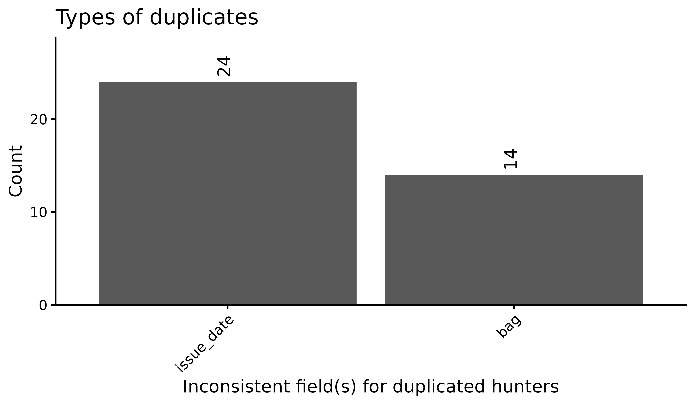
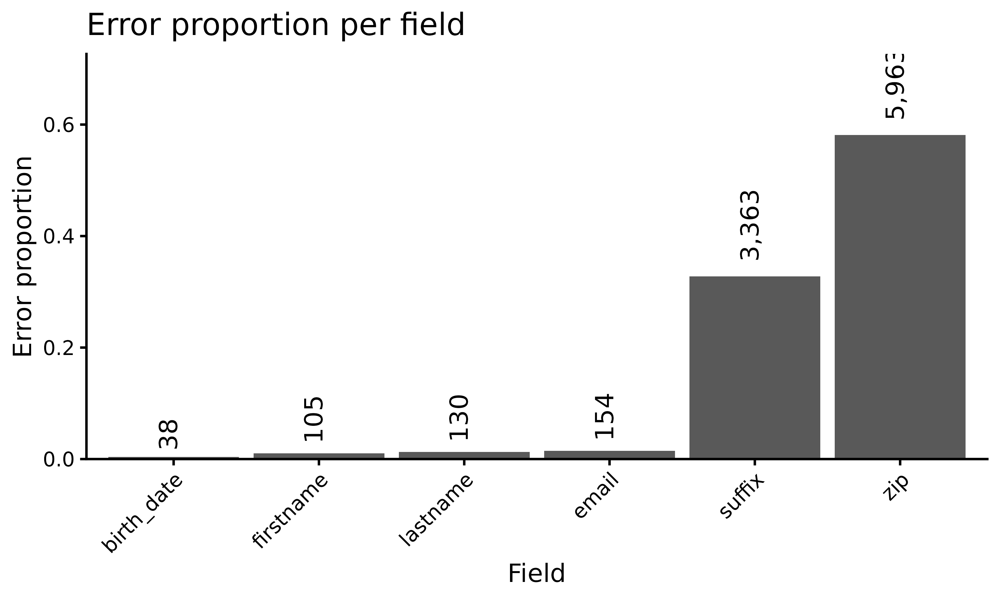
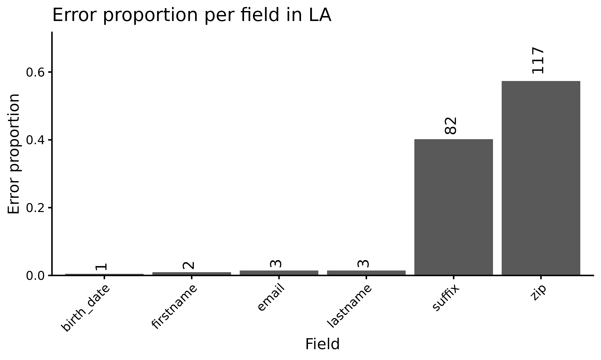
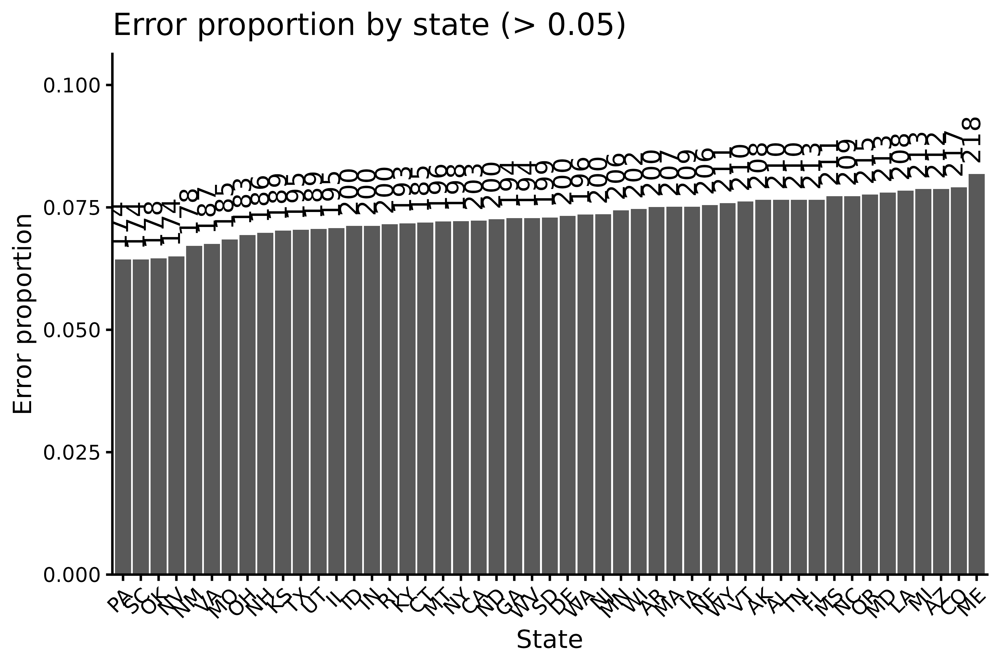
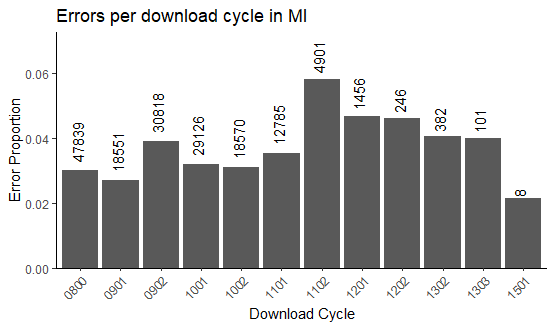

The migbirdHIP Workflow
migbirdHIP-workflow.RmdTable of Contents
Introduction
The migbirdHIP package was created by the U.S. Fish and
Wildlife Service (USFWS) to process, clean, and visualize Harvest
Information Program (HIP) registration data.
Installation
The package can be installed from the USFWS GitHub repository using:
pak::pak("USFWS/migbirdHIP")Load
Load migbirdHIP after installation. The package will
return a startup message with the version you have installed and what
season of HIP data the package version was intended for.
## migbirdHIP v2026.0.0
## Compatible with 2026-2027 HIP dataFunctions overview
The flowchart below is a visual guide to the order in which functions
are used. Some functions are only used situationally and some issues
with the data cannot be solved using a function at all. The general
process of handling HIP data is demonstrated in the flowchart; every
exported function in the migbirdHIP package is included in
it and the vignette.

Overview of migbirdHIP functions in a flowchart format.
Part A: Data Import and Cleaning
fileRename
The fileRename() function renames non-standard file
names to the standard format. We expect a file name to be a 2-letter
capitalized state abbreviation followed by YYYYMMDD (indicating the date
data were submitted).
Some states submit files using a 5-digit file name format, containing
2 letters for the state abbreviation followed by a 3-digit Julian date.
To convert these 5-digit filenames to the standard format (a requirement
to read data properly with read_hip()), supply
fileRename() with the directory containing HIP data. File
names will be automatically overwritten with the YYYYMMDD format date
corresponding to the submitted Julian date.
This function also converts lowercase state abbreviations to uppercase.
The current hunting season year must be supplied to the
year parameter to accurately convert dates.
fileRename(path = "C:/HIP/raw_data/DL0901", year = 2026)fileCheck
Check if any files in the input folder have already been written to
the processed folder using fileCheck().
fileCheck(
raw_path = "C:/HIP/raw_data/DL0901/",
processed_path = "C:/HIP/corrected_data/"
)read_hip
Read HIP data from fixed-width .txt files using
read_hip(). Files must adhere to a 10-character naming
convention to successfully be read in (2-letter capitalized state
abbreviation followed by YYYYMMDD); if files were submitted
with a 5-digit format or lowercase state abbreviation, run fileRename first.
Note: In the read_hip() example below,
we use an internal directory to read in fake HIP data files, which
allows the function to demonstrate its errors and messages. (The testing
data were generated with data-raw/create_fake_HIP_data.R
and are stored under inst/extdata/.) All other examples in
this vignette will use C:/ drive examples for clarity.
## Time to read in 49 files: 0 secThe read_hip() function allows data to be read in
for:
- all states (e.g.,
state = NA, the default) - a specific state (e.g.,
state = "DE") - a specific download (e.g.,
season = FALSE, the default;pathmust be to the download’s subdirectory) - an entire season (e.g.,
season = TRUE, andpathis to the directory containing all download subdirectories)
Use unique = TRUE to read in a frame without exact
duplicates, or unique = FALSE to read in all registrations
including exact duplicates. Important: the
record_key field is not created if
unique = FALSE, which is required in some following steps
(e.g., duplicateFix(), proof()).
Data are read in an expected format beginning with the
title field and ending with email field.
Additional fields are created by read_hip():
dl_state, dl_date, source_file,
dl_cycle, dl_key, record_key.
The read_hip() function does NOT read in data:
- From subfolders named
"hold","permit", or"lifetime". - Permit and lifetime HIP registrations must be read in and processed in a different workflow than the one outlined in this vignette.
The read_hip() function fails if:
- The state abbreviation in the file name is not found in the list of 49 continental US states.
- The date in the file name is formatted incorrectly.
The read_hip() function returns a message if:
- Blank files are found in the directory
As an example, we will use the default read_hip()
settings to read in all of the states from download 0901, using fake HIP
data files located in the extdata/DL0901/ directory of the
R package.
qualityMessages
The qualityMessages() function returns a message
if:
-
NAvalues detected in one or more ID fields (firstname,lastname,state,birth_date) for >10% of a file and/or >100 registrations - All emails are missing from a file
- Test records are found
- Any registration has a
0in every bag field - Any registration has an
NAin every bag field - Any registration contains a bag value that is not a 1-digit number
- For presumed solo permit DNHs; if any OR or WA
hunt_mig_birdsdoes not equal2when non-permit bags are0and one ofband_tailed_pigeon,brant, and/orseaduckis2. - Any registration_yr is not equal to
REF_CURRENT_SEASONorREF_CURRENT_SEASON + 1
glyphCheck
During pre-processing, R may throw an error that says something like
“invalid UTF-8 byte sequence detected”. The error usually includes a
field name but no other helpful information. The
glyphCheck() function identifies values containing
non-UTF-8 glyphs/characters and prints them with the source file in the
console so they can be edited.
glyphCheck(raw_data)## All characters are UTF-8shiftCheck
Find and print any rows that have a line shift error with
shiftCheck().
shiftCheck(raw_data)## No line shifts detected.clean
The clean() function performs data cleaning and filters
out bad registrations.
clean_data <- clean(raw_data)## A total of 919 2s converted to 0s for permit file states:## # A tibble: 9 × 3
## dl_state n spp
## <chr> <int> <chr>
## 1 CO 118 cranes
## 2 KS 100 cranes
## 3 MN 108 cranes
## 4 MT 105 cranes
## 5 ND 96 cranes
## 6 NM 110 cranes
## 7 OK 105 cranes
## 8 TX 107 cranes
## 9 WY 70 cranes## A total of 305 2s converted to 0s for permit file states:## # A tibble: 3 × 3
## dl_state n spp
## <chr> <int> <chr>
## 1 CO 107 band_tailed_pigeon
## 2 NM 106 band_tailed_pigeon
## 3 UT 92 band_tailed_pigeonRegistrations are dropped if:
- Any bag value is not a 1-digit number.
-
NAor0for every bag field - Test record is detected
-
firstnameandlastnameare"TEST" -
lastnameis"INAUDIBLE" -
firstnameis one of:"INAUDIBLE", "BLANK", "USER", "TEST", "RESIDENT"
-
- One of:
-
firstname,lastname,state, orbirth_dateisNA -
addressANDemailareNA,city - AND/OR
zipANDemailareNA
-
Changes include:
-
firstname- Change to uppercase
- If a suffix value is detected (e.g. JR, SR, 1ST-20TH and 1-20 in Roman numerals, excluding XVIII) delete it. Delete white space around string.
-
lastname- Change to uppercase
- If a suffix value is detected (e.g. JR, SR, 1ST-20TH and 1-20 in Roman numerals, excluding XVIII) delete it. Delete white space around string.
-
suffix- Change to uppercase
- If a suffix value is detected in firstname or lastname, replace the suffix field with that value. Values that are searched for include JR, SR, 1ST-20TH and 1-20 in Roman numerals, excluding XVIII. Periods and commas are deleted.
-
zip- Remove ending hyphen from zip codes with only 5 digits
- Remove ending 0 from zip codes with 10 digits
- Insert a hyphen in continuous 9 digit zip codes
- Insert a hyphen in 9 digit zip codes with a middle space
- Delete trailing -0000 and -____
-
hunt_mig_birds- For Oregon and/or Washington, if
hunt_mig_birdsis0and ifband_tailed_pigeon,brant, orseaduckis2, changehunt_mig_birdsfield from0to2
- For Oregon and/or Washington, if
-
band_tailed_pigeon- If any permit file states submitted a
2for band_tailed_pigeon, change the2to a0
- If any permit file states submitted a
-
cranes- If any permit file states submitted a
2for crane, change the2to a0
- If any permit file states submitted a
In addition to the changes listed above, the internal
zipCheck() function returns a message from
clean() if zip codes are detected that do not correspond to
provided state of residence for >10% of a file and/or >100
registrations.
issueCheck
The issueCheck() function assesses the validity of the
issue_date field based on the current hunting season’s HIP
issuance start and end dates (not season open and close dates). A plot
is automatically returned for past and future registrations. The plot is
skipped by default, so to plot the data write
plot = TRUE.
current_data <- issueCheck(clean_data, year = 2026, plot = FALSE)Criteria evaluated and changes made:
-
Past registration: a registration’s
issue_dateis before the start date of HIP issuance for its state; these registrations are filtered out. -
Overlap registration: registrations from 2-season
states with an
issue_datebetween the start of next season’s issue start and this season’s issue end fall into the"overlap"category; these registrations are assigned"current"ifregistration_yris equal toyearor"future"ifregistration_yrisyear + 1. -
Current registration: a registration’s
issue_datefalls between the start and end dates of HIP issuance for its state;registration_yris overwritten withyear. -
Future registration: a registration has an
issue_dateafter the last day of issuance for its state for this season AND theissue_datefalls between the projected issue start and end dates for next season; theregistration_yris changed toyear + 1. -
Invalid registration: a registration’s
issue_datedoes not fall in the issue window for this season or next season; the date falls in the gap between issue windows. These registrations are filtered out. -
Bad
issue_date: a registration’sissue_datecannot be evaluated, likely because it’s formatted incorrectly or is illogical; these registrations are filtered out. - Return message if any registration’s
issue_dateis after the file was submitted.
duplicateFinder
The duplicateFinder() function finds hunters that have
more than one registration. Registrations are grouped by
firstname, lastname, state,
birth_date, dl_state, and
registration_yr to identify unique hunters. If the same
hunter has 2 or more registrations, the fields that are not identical
are counted and summarized.
Plot the duplicates with duplicatePlot.
duplicateFinder(current_data)## There are 38 registrations with duplicates; 76 total duplicated records.## # A tibble: 2 × 2
## duplicate_field n
## <chr> <int>
## 1 bag 14
## 2 issue_date 24duplicateFix
We sometimes receive multiple HIP registrations per person which must
be resolved by duplicateFix(). Duplicates are identified
when more than one registration has the same firstname,
lastname, state, birth_date,
dl_state, and registration_yr. Only 1 HIP
registration per hunter can be kept. For in-line permit states (WA, OR),
permit records are submitted separately from HIP registrations. Multiple
permits are allowed. We differentiate HIP and
PMT records from in-line permit states, we check the values
in the non-permit species fields (ducks_bag,
geese_bag, dove_bag,
woodcock_bag, coots_snipe,
rails_gallinules). HIP registrations contain non-zero
values in those columns, but permit records always have 0
values.
deduplicated_data <- duplicateFix(current_data)To decide which HIP registration to keep from a group, we follow a series of logic.
For sea duck and brant states:
These states include: AK, CA, CT, DE, MA, MD, NC, NH, NJ, NY, RI, VA
- Keep registration(s) with the most recent issue date.
- Exclude registrations with all 1s or all 0s in bag columns from consideration.
- Keep any registrations that have a 2 for either brant or sea duck (for seaduck and brant states), or 2 for seaduck (Maine only).
- If more than one registration remains, choose to keep one randomly.
For HIP registrations from in-line permit states and all other states:
These states include: AL, AZ, AR, CO, FL, GA, ID, IL, IN, IA, KS, KY, LA, MI, MN, MS, MO, MT, NE, NV, NM, ND, OH, OK, OR, PA, SC, SD, TN, TX, UT, VT, WA, WV, WI, WY
- Keep registration(s) with the most recent issue date.
- Exclude registrations with all 1s or all 0s in bag columns from consideration, if possible.
- If more than one registration remains, choose to keep one randomly.
A new field called record_type is added to the data
after the above deduplicating process. Every HIP registration is labeled
HIP. In-line permit states WA and OR send HIP and permit
records separately, which are labeled HIP and
PMT respectively.
bagCheck
Running bagCheck() ensures species “bag” values are in
order. This function searches for values in species group columns that
are not typical or expected by the US Fish and Wildlife Service. If a
value outside of the normal range is detected, an output tibble is
created. Each row in the output contains the state, species, unusual
stratum value, and a list of the normal values we would expect.
In-line permit records are not included in this check, to prevent
ducks_bag = "0" values from popping up when we know those
don’t count.
If a value for a species group is given in the HIP data that doesn’t
match anything in our records, the species reported in the output will
have NA values in the expected_bag_value
column. These species are not hunted in the reported states.
bagCheck(deduplicated_data)## # A tibble: 84 × 6
## dl_state spp bad_bag_value expected_bag_value n proportion
## <chr> <chr> <chr> <chr> <int> <chr>
## 1 MD woodcock_bag 9 2, 3, 5 1 0%
## 2 FL woodcock_bag 9 1, 2, 3, 5 1 0%
## 3 GA dove_bag 9 1, 2, 3, 5 1 0%
## 4 KS dove_bag 9 1, 2, 3, 5 1 0%
## 5 KY dove_bag 9 1, 2, 3, 5 1 0%
## 6 KY woodcock_bag 9 1, 2, 3, 5 1 0%
## 7 NJ woodcock_bag 9 1, 2, 3, 5 1 0%
## 8 MT coots_snipe 9 1, 2, 3, 4, 5 1 0%
## 9 NC ducks_bag 9 1, 2, 3, 4, 5 1 0%
## 10 NC dove_bag 9 1, 2, 3, 4, 5 1 0%
## # ℹ 74 more rowsproof
After data are cleaned and checked in the steps above, we run
proof() to check for errors. Note that no actual
corrections or data changes take place as a result of this function. The
year of the Harvest Information Program must be supplied to the
year parameter, which aids in checking
registration_yr, issue_date and
birth_date.
Values that are considered irregular are flagged in a new field
called errors. For each existing field (title, firstname,
middle, lastname, suffix, address, city, state, zip, birth_date,
issue_date, hunt_mig_birds, ducks_bag, geese_bag, dove_bag,
woodcock_bag, coots_snipe, rails_gallinules, cranes, band_tailed_pigeon,
brant, seaducks, registration_yr, email), values are compared to
standard expected formats. If they do not conform, the field name is
pasted as a string in the errors column. Each row can have
anywhere from zero errors (NA) to all field names listed.
Multiple errors per registration are hyphen delimited. A typical
errors value would look like:
"suffix-address-zip", "zip", or
"middle-email".
proofed_data <- proof(deduplicated_data, year = 2026)What gets flagged in the errors field and why:
-
"title"- If
titleis not one of:NA,0,1or2. - If common first names are assigned the wrong title.
- If
-
"firstname"-
firstnamecontains anything other than letters, apostrophe(s), space(s), and/or hyphen(s) -
firstnamecontains less than 2 letters -
firstnamecontains"AKA"
-
-
"middle"ifmiddleis not exactly 1 letter orNA -
"lastname"-
lastnamecontains anything except letters, apostrophe(s), space(s), hyphen(s), and/or period(s) -
lastnamecontains less than 2 letters
-
-
"suffix"-
suffixshould be one of:I, II, III, IV, V, VI, VII, VIII, IX, X, XI, XII, XIII, XIV, XV, XVI, XVII, XIX, XX, 1ST, 2ND, 3RD, 4TH, 5TH, 6TH, 7TH, 8TH, 9TH, 10TH, 11TH, 12TH, 13TH, 14TH, 15TH, 16TH, 17TH, 18TH, 19TH, 20TH, JR, SR. - Note that
XVIIIis excluded (exceeds 4 character limit)
-
-
"address"ifaddresscontains a|, tab, or non-UTF8 character -
"city"-
citycontains anything other than letters, space(s), hyphen(s), apostrophe(s), and/or period(s) -
citycontains less than 3 letters
-
-
"state"ifstateis not contained in the following list of abbreviations for US states and territories and Canadian provinces and territories:- AL, AK, AZ, AR, CA, CO, CT, DE, FL, GA, ID, IL, IN, IA, KS, KY, LA, ME, MD, MA, MI, MN, MS, MO, MT, NE, NV, NH, NJ, NM, NY, NC, ND, OH, OK, OR, PA, RI, SC, SD, TN, TX, UT, VT, VA, WA, WV, WI, WY, DC, AS, GU, MP, PR, VI, UM, MH, FM, PW, AA, AE, AP, AB, BC, MB, NB, NL, NS, NT, NU, ON, PE, PQ, QC, SK, YT
-
"zip"- If a registration’s
addressdoesn’t have azipthat should be in their reported addressstateof residence - If the fist 5 digits of
zipare not inREF_ZIP_CODE$zipcodeat all.
- If a registration’s
"birth_date"- If the date is formatted poorly (per
REGEX_DATE_FORMAT). - If the date can’t be parsed by
lubridate::mdy(). - If the date is later than today.
- If the date is earlier than
09/01/(REF_CURRENT_SEASON - 100). -
"hunt_mig_birds"if not equal to1or2 -
"registration_yr"if not equal to the HIP data collection year -
"email"-
emaildoes not match universally accepted email regex (seeREGEX_EMAIL) -
emailis obfuscative- e.g.,
none@gmail.com, nottoday@gmail.co``m, fake.fake@gmail.com``, n@a.com, x@y.com, brian@na.com, etc (seeREGEX_EMAIL_OBFUSCATIVE_LOCALPART,REGEX_EMAIL_OBFUSCATIVE_DOMAIN, andREGEX_EMAIL_OBFUSCATIVE_ADDRESS) - A repeated character is detected, e.g.
aaa@a.com(seeREGEX_EMAIL_REPEATED_CHAR) - The domain is
tpwd.texas.govor some variation (seeREGEX_EMAIL_OBFUSCATIVE_TPWD) - A
walmart.comdomain is preceded by only numbers (seeREGEX_EMAIL_OBFUSCATIVE_WALMART)
- e.g.,
-
emailis longer than 100 characters - A common domain name (e.g., gmail, yahoo) has a common typo
- A common domain name doesn’t have a matching top-level domain (e.g.,
gmail.netorhotmail.gov) - The address has a bad top-level domain (e.g.,
.comcom,.ccom, etc.) - The email is missing a top-level domain
- The top-level domain period is missing (e.g.,
gmailcom).
-
correct
Data can be corrected by running the correct() function
with year of the Harvest Information Program supplied to the
year parameter.
corrected_data <- correct(proofed_data, year = 2026)Changes and corrections include:
titleis changed toNAif"title"is in theerrorsfieldmiddleis changed toNAif"middle"is in theerrorsfieldsuffixis changed toNAif"suffix"is in theerrorsfield-
email- Add endings to common domains if missing (e.g.
@gmailwould become@gmail.com), for domains including:gmail, yahoo, hotmail, aol, icloud, comcast, outlook, sbcglobal, att, msn, live, bellsouth, charter, ymail, me, verizon, cox, earthlink, protonmail, pm, mail, duck, ducks
- Add top-level domain period(s) if:
- Missing before
com, net, edu, gov, org - Missing in
navymil, mailmil, armymil; add multiple periods if missing to usnavymil, usafmil, usarmymil, usacearmymil
- Missing before
- Add endings to common domains if missing (e.g.
Part B: Data Visualization and Tabulation
duplicatePlot
Plot duplicates with duplicatePlot().
duplicatePlot(current_data)## There are 38 registrations with duplicates; 76 total duplicated records.
Figure 1. Plot of types of duplicates.
errorPlotFields
The errorPlotFields() function can be run on all
states…
errorPlotFields(proofed_data, loc = "all", year = 2026)
Figure 2. Plot of all location’s errors by field name.
… or it can be limited to just one.
errorPlotFields(proofed_data, loc = "LA", year = 2026)
Figure 3. Plot of Louisiana’s errors by field name.
It is possible to add any ggplot2 components to these
plots. A plot can be altered with facet_wrap using either
dl_cycle or dl_date. The example below
demonstrates how this package’s functions can interact with
tidyverse and shows an example of an
errorPlotFields with facet_wrap (using a
subset of 4 download cycles).
errorPlotFields(
hipdata2025 |>
filter(str_detect(dl_cycle, "0800|0901|0902|1001")),
year = 2026) +
theme(
axis.text.x = element_text(angle = 90, vjust = 0, hjust = 1),
legend.position = "bottom") +
facet_wrap(~dl_cycle, ncol = 2)errorPlotStates
The errorPlotStates() function plots error proportions
per state. A threshold value must be set to only view states above a
certain proportion of error (in the example below,
threshold = 0.05 indicates an error tolerance of 5%). Bar
labels are error counts.
errorPlotStates(proofed_data, threshold = 0.05)
Figure 4. Plot of proportion of error by state.
errorPlotDL
This function should not be used unless you want to visualize an
entire season of data. The errorPlotDL() function plots
proportion of error per download cycle over the course of the hunting
season. Location may be specified with the loc parameter to
see a particular state over time.
errorPlotDL(hipdata2025, loc = "MI")
errorPlot_dl example output
pullErrors
The pullErrors() function can be used to view all of the
actual values that were flagged as errors in a particular field. In this
example, we find that the suffix field contains several
values that are not accepted.
pullErrors(proofed_data, field = "suffix")## [1] "DDS" "MD" "PHD" "DVM"Running pullErrors() on a field that has no errors will
return a message.
pullErrors(proofed_data, field = "dove_bag")## Success! All values are correct.errorTable
The errorTable() function returns error data as a
tibble, which can be assessed as needed or exported to create records of
download cycle errors. The basic function reports errors by both
location and field.
errorTable(proofed_data)## # A tibble: 261 × 3
## dl_state error error_count
## <chr> <chr> <int>
## 1 AK email 3
## 2 AK firstname 1
## 3 AK lastname 2
## 4 AK suffix 71
## 5 AK zip 131
## 6 AL birth_date 2
## 7 AL email 1
## 8 AL firstname 1
## 9 AL lastname 5
## 10 AL suffix 79
## # ℹ 251 more rowsErrors can be reported by only location by turning off the
field parameter.
errorTable(proofed_data, field = "none")## # A tibble: 49 × 2
## dl_state error_count
## <chr> <int>
## 1 AK 208
## 2 AL 210
## 3 AR 200
## 4 AZ 212
## 5 CA 203
## 6 CO 217
## 7 CT 185
## 8 DE 200
## 9 FL 213
## 10 GA 194
## # ℹ 39 more rowsErrors can be reported by only field by turning off the
loc parameter.
errorTable(proofed_data, loc = "none")## # A tibble: 6 × 2
## error error_count
## <chr> <int>
## 1 birth_date 38
## 2 email 154
## 3 firstname 105
## 4 lastname 130
## 5 suffix 3363
## 6 zip 5963Location can be specified using one of the 49 contiguous state abbreviations.
errorTable(proofed_data, loc = "CA")## # A tibble: 5 × 3
## dl_state error error_count
## <chr> <chr> <int>
## 1 CA email 2
## 2 CA firstname 1
## 3 CA lastname 2
## 4 CA suffix 69
## 5 CA zip 129Field can be specified (one of: all, none, title, firstname, middle, lastname, suffix, address, city, state, zip, birth_date, issue_date, hunt_mig_birds, ducks_bag, geese_bag, dove_bag, woodcock_bag, coots_snipe, rails_gallinules, cranes, band_tailed_pigeon, brant, seaducks, registration_yr, email).
errorTable(proofed_data, field = "suffix")## # A tibble: 1 × 2
## error error_count
## <chr> <int>
## 1 suffix 3363Total errors for a location can be pulled.
errorTable(proofed_data, loc = "CA", field = "none")## # A tibble: 1 × 2
## dl_state total_errors
## <chr> <int>
## 1 CA 203Total errors for a field in a particular location can be pulled.
errorTable(proofed_data, loc = "CA", field = "dove_bag")## No errors in dove_bag for CA.Part C: Writing Data and Reports
write_hip
After the data have been corrected, the data are ready to be written
out. Use write_hip() to do final processing to the data,
which includes 1) adding in FWS strata and 2) setting NA
values to blank strings. The write_hip() function will fail
if there is an NA in dl_state or if there is
an NA in dl_date. It will also fail if any
value exceeds the database character limits (see
failWidths() helper function).
If split = FALSE, the final table will be saved as a
single .csv to your specified path. If
split = TRUE (default), one .csv file per each
input .txt source file will be written to the specified
directory.
The type argument helps apply additional checks for
permits; supply "HIP" for HIP data from a regular download,
or "CR" or "BT" for separate permit file
records. If type = "HIP", writing data will fail if there
are more record_type = "PMT" records in the
corrected_data than record_type = "HIP"
records.
write_hip(
corrected_data, path = "C:/HIP/processed_data/", type = "HIP", split = TRUE)writeReport
The writeReport() function can be used to automatically
generate an R markdown document with figures, tables, and summary
statistics. This can be done at the end of a download cycle.
writeReport(
raw_path = "C:/HIP/DL0901/",
temp_path = "C:/HIP/corrected_data",
year = 2026,
dl = "0901",
dir = "C:/HIP/dl_reports",
file = "DL0901_report")